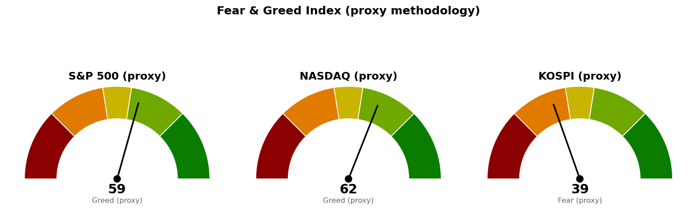

미국 지수·섹터·금리·유가·변동성지수는 뉴욕 9월 18일 정규장 진행 중의 값으로 한국시간 00:30(뉴욕 11:30) 조회분입니다. 코스피와 니케이 225는 9월 18일 마감 뒤의 값입니다. 아래 미국 판정에 '진행 중'이 붙은 이유가 이것입니다.
직전은 코스피 세션이 진행 중이던 12:01에 썼고, 코스피 판정을 '아직 진행 중'으로 남긴 채 미국 9월 18일 세션을 다음 확인 지점으로 걸었습니다. 코스피는 마감됐으므로 종가로 판정하고, 미국 두 지수는 세션이 2시간 진행된 시점의 장중값으로만 적습니다.
| 직전에 건 조건 | 판정 | 근거 |
|---|---|---|
| 코스피 일봉 종가 6,815 회복 | 충족 | 9월 18일 종가 6,875로 60포인트(하루 평균 변동폭 239.42의 0.25배) 위에서 마쳤습니다. 직전 브리핑이 "다음 세션에 볼 것"으로 남긴 바로 그 조건입니다 |
| 코스피 도착지 7,025 (고가 도달) | 미충족 | 고가 6,914로 111포인트(0.46배) 아래에서 멈췄습니다 |
| 코스피 사다리 1차 6,702 (장중 터치) | 미충족 · 집행 없음 | 저가 6,831로 129포인트(0.54배) 위에서 버텼습니다 |
| S&P 500 일봉 종가 7,668 회복 | 미충족 · 진행 중 | 장중 고가 7,657로 11포인트(하루 평균 변동폭 65.54의 0.17배) 아래까지만 올라왔고 현재 7,631입니다 |
| S&P 500 도착지 7,760 (고가 도달) | 미충족 | 고가 7,657로 103포인트(1.57배) 아래입니다 |
| S&P 500이 7,604를 종가로 지킴 | 진행 중 · 아직 지킴 | 저가 7,618로 14포인트(0.22배) 위에서 멈췄습니다. 판정은 오늘 마감 종가입니다 |
| S&P 500 사다리 1차 7,604 (장중 터치) | 미충족 · 집행 없음 | 위와 같은 저가입니다 |
| 나스닥 일봉 종가 26,680 회복 | 미충족 · 진행 중 | 장중 고가 26,545로 135포인트(하루 평균 변동폭 312.96의 0.43배) 아래입니다 |
| 나스닥 사다리 1차 26,271 (장중 터치) | 미충족 · 집행 없음 | 저가 26,364로 93포인트(0.30배) 위입니다 |
| 신규 편입 재개 — S&P 500 종가 7,668 위 그리고 30년 금리 5.286% 아래 | 둘 다 미충족 · 금리는 더 벌어짐 | 지수는 37포인트(0.57배) 아래이고, 30년 금리는 5.296%에서 5.336%로 올라 조건선에서 0.010%포인트 위였던 것이 0.050%포인트 위가 됐습니다 |
"못 지키면 어디까지"가 실제로 어디까지 갔는지 — 세 지수 모두 직전이 적은 다음 지지(S&P 500 7,604 · 나스닥 26,271 · 코스피 6,702)에 닿지 않았습니다. 가장 가까이 간 것은 S&P 500으로 저가가 14포인트(0.22배) 위였고, 나스닥은 93포인트(0.30배), 코스피는 129포인트(0.54배) 위에서 멈췄습니다.
직전 계획은 살아 있습니다. 미국 두 지수는 어느 가격에도 닿지 않아 숫자를 그대로 둡니다 — S&P 500 기준선 7,668 · 도착지 7,760 · 사다리 7,604/7,568/취소선 7,511, 나스닥 기준선 26,680 · 도착지 26,976 · 사다리 26,271/26,030/취소선 25,904는 직전과 같은 값입니다. 코스피는 기준선이 충족됐으므로 그 선의 역할이 '회복해야 할 선'에서 '지켜야 할 선'으로 바뀌며, 숫자 6,815는 그대로 둡니다. 코스피 '못 지키면' 칸만 6,600에서 6,702로 올렸고 그 이유는 지수 계획 절에 적었습니다.
직전 판단 중 틀린 것 — 직전 브리핑은 코스피 6,815 회복을 조건부로 남겼고 그 조건이 충족됐으므로 방향은 맞았습니다. 다만 직전이 30년 금리를 "0.010%포인트까지 좁혀졌다"고 적으며 조건 충족이 가까워진 것처럼 읽히게 썼는데, 하루 만에 0.050%포인트로 벌어졌습니다. 하루치 금리 변화로 조건 근접을 말한 것이 이번에 뒤집혔습니다.
자동 채점이 코스피 9월 18일 봉을 판정하지 못했습니다. 직전 브리핑이 12:07, 그러니까 코스피 세션 도중에 기준선을 등록하면서 채점 시작일이 9월 18일로 못 박혔고, 그래서 같은 날 마감 봉이 채점 대상에서 빠졌습니다. 위 코스피 판정은 종가를 직접 대고 내린 것입니다.
| 줄 | 내용 |
|---|---|
| 현재 위치 | 7,631 (9/18 장중, -0.09%, 시가 7,657 · 고가 7,657 · 저가 7,618). 시가가 그대로 고가였습니다. 20일선(최근 20일 평균 가격선이되 최근 가격에 더 무게를 두는 지수이동평균) 7,643보다 12포인트(하루 평균 변동폭 65.54의 0.19배) 아래, 50일선 7,603보다 28포인트(0.42배) 위. 상대강도지수(최근 14일 동안 오른 폭과 내린 폭의 비율을 0~100으로 나타낸 값) 49.0 |
| 기준선 | 7,668 (직전 그대로) — 일봉 종가로 위에서 마쳐야 인정합니다. 현재가에서 37포인트(0.57배) 위입니다. 장중에 지나가는 것은 판정이 아닙니다. 신규 종목 편입을 재개하려면 여기에 더해 30년 금리 5.286% 아래가 같이 충족돼야 합니다 |
| 지키면 | 7,760 (직전 그대로). 7,750 단위 가격과 8월 28일 스윙 고점 7,771이 겹치고 10거래일 전에도 반응했습니다(겹침 점수 2.3). 현재가에서 129포인트(1.97배) 위입니다. 그 위 7,801(8월 13일 고점 7,817 + 90일 박스 상단 7,794, 점수 2.9)이 다음 저항으로 170포인트(2.60배) 위입니다 |
| 못 지키면 | 7,604 (직전 그대로). 7,600 단위 가격과 50일선 7,603, 9월 1일 스윙 저점 7,611이 모인 구간(7,600~7,611, 겹침 점수 3.3)이며 현재가에서 27포인트(0.41배) 아래입니다. 여기를 종가로 잃으면 되찾은 자리를 다시 내준 것으로 보고 축소 검토로 돌아갑니다. 그 아래 다음 지지는 7,568(7,550 단위 가격 + 5회 반응 가격대 + 6월 15일·7월 15일 스윙 고점, 점수 4.5)으로 63포인트(0.96배) 아래입니다 |
| 매수 사다리 | 1차 7,604 · 계좌의 3% / 2차 7,568 · 계좌의 3% / 취소선 7,511(7,500 단위 가격 + 7회 반응 가격대 7,522, 점수 2.8, 현재가에서 120포인트·1.83배 아래). 취소선은 일봉 종가로 잃을 때 판정하며 그때 남은 회차를 멈춥니다. 두 회차가 다 물려 취소선에서 정리하면 계좌 대비 -0.06%입니다 |
| 예상 기간 | 기준선 7,668까지 0.57일치, 도착지 7,760까지 1.97일치, 1차 회차 7,604까지 0.41일치, 취소선까지 1.83일치 변동폭입니다. 기준선과 1차 회차는 남은 오늘 세션 안에 닿을 수 있는 거리입니다 |
7,604는 사다리 1차이면서 되돌림 판정선입니다. 장중에 7,604를 터치하면 1차 회차를 집행하고, 일봉 종가로 그 아래에서 마치면 축소 검토로 돌아가며 남은 회차를 멈춥니다. 같은 가격이지만 터치와 종가 이탈은 다른 사건입니다.
90일 박스는 7,282~7,794이고, 박스 안쪽은 지지 테스트마다 매도 거래량이 늘면서 저점은 절상되는 상태라 매집·분산 어느 쪽 우위도 판정되지 않았습니다. 직전 90일 구간(6,475~7,048)에서 위로 올라와 이 박스에 들어온 상태이며, 직전과 같습니다.
| 줄 | 내용 |
|---|---|
| 현재 위치 | 26,412 (9/18 장중, -0.02%, 시가 26,522 · 고가 26,545 · 저가 26,364). 20일선 26,252보다 160포인트(하루 평균 변동폭 312.96의 0.51배) 위, 50일선 26,107보다 305포인트(0.98배) 위. 상대강도지수 53.8 |
| 기준선 | 26,680 (직전 그대로) — 26,600 단위 가격과 8월 5일 고점 26,739, 6월 16일 고점이 겹치고 10거래일 전에도 반응했습니다(겹침 점수 2.3). 일봉 종가로 위에서 마쳐야 인정하며, 현재가에서 268포인트(0.86배) 위입니다 |
| 지키면 | 26,976 (직전 그대로). 90일 박스 상단 26,951과 27,000 단위 가격이 겹치고 25거래일 전에 반응했습니다(겹침 점수 2.3). 현재가에서 564포인트(1.80배) 위입니다. 가는 길에 8월 13일 고점 26,876 부근(26,789~26,876, 점수 2.3)을 먼저 넘어야 하며 그 자리는 409포인트(1.31배) 위입니다 |
| 못 지키면 | 26,271 (직전 그대로). 26,200 단위 가격과 20일선 26,252, 8회 반응 가격대 26,289, 7월 15일 스윙 고점 26,317이 겹치는 구간(26,200~26,317)이며 현재가에서 141포인트(0.45배) 아래입니다. 여기를 종가로 잃으면 다음은 26,030(9월 1일 스윙 저점 25,996 + 26,000 단위 가격 + 50일선 26,107, 점수 3.3)으로 382포인트(1.22배) 아래입니다 |
| 매수 사다리 | 1차 26,271 · 계좌의 3% / 2차 26,030 · 계좌의 3% / 취소선 25,904(25,800 단위 가격 + 8월 24일 스윙 저점 25,911 + 7회 반응 가격대, 점수 4.5, 현재가에서 508포인트·1.62배 아래). 일봉 종가로 취소선을 잃으면 남은 회차를 집행하지 않습니다. 두 회차가 다 물려 취소선에서 정리하면 계좌 대비 -0.06%입니다 |
| 예상 기간 | 기준선 26,680까지 0.86일치, 도착지 26,976까지 1.80일치, 1차 회차 26,271까지 0.45일치, 취소선까지 1.62일치 변동폭입니다 |
26,271도 S&P 500의 7,604와 같은 두 역할을 합니다 — 장중 터치는 1차 회차 집행이고, 일봉 종가로 그 아래에서 마치면 남은 회차를 멈춥니다. 이 구간의 겹침 점수는 직전 4.0에서 5.0으로 두꺼워졌습니다. 20일선이 26,236에서 26,252로 올라와 구간 안으로 더 들어온 데 따른 것이며, 가격 26,271은 그대로입니다.
90일 박스는 24,807~26,951이고 박스 안에서 저점이 낮아지고 있어 매집·분산 어느 쪽 우위도 판정되지 않았습니다. 직전과 같습니다. 일봉 되돌림선은 이번에도 산출되지 않았습니다 — 직전 상승 구간의 종점이 6월 1일로 지금 보는 구간의 앞쪽에 있어 되돌림선이 낡았기 때문이며, 그래서 나스닥 가격은 선반·겹침 구간·박스로만 잡았습니다.
| 줄 | 내용 |
|---|---|
| 현재 위치 | 6,875 (9/18 종가, +2.37%, 시가 6,886 · 고가 6,914 · 저가 6,831). 20일선 6,787보다 88포인트(하루 평균 변동폭 239.42의 0.37배) 위, 50일선 6,876과는 2포인트(0.01배) 차이로 사실상 같은 자리입니다. 상대강도지수 52.2 |
| 기준선 | 6,815 (숫자는 직전 그대로, 역할이 바뀜) — 9월 18일 종가 6,875로 충족됐으므로 이제 회복해야 할 선이 아니라 지켜야 할 선입니다. 현재가에서 60포인트(0.25배) 아래이며, 판정은 그대로 일봉 종가입니다 |
| 지키면 | 7,025 (직전 그대로). 5월 20일부터 이어진 6회 반응 가격대에 7,000 단위 가격과 스윙 고점 6,996·스윙 저점 7,054가 겹치며 지지에서 저항으로 역할이 바뀌었습니다(겹침 점수 4.5). 현재가에서 150포인트(0.63배) 위입니다. 그 위는 40일 박스 상단 7,128을 품은 7,187 구간(점수 5.7)으로 312포인트(1.30배) 위입니다 |
| 못 지키면 | 6,702 (직전 6,600에서 올림). 6,600~6,702 겹침 구간은 그대로이고 점수도 7.0으로 세 지수 중 가장 두껍습니다 — 6,600 단위 가격 + 4회 반응 선반 + 저항에서 지지로 바뀐 자리 + 주봉 38.2% 되돌림선 6,673 + 일봉 61.8% 되돌림선 6,702가 모여 있습니다. 옮긴 이유는 지수가 기준선을 넘어 이 구간 위에 자리를 잡아, 내려올 때 먼저 닿는 가격이 구간 하단이 아니라 상단이 됐기 때문입니다. 현재가에서 173포인트(0.72배) 아래이고, 구간 하단 6,600은 275포인트(1.15배), 그 아래 6,409(5회 반응 가격대 + 6,400 단위 가격 + 9월 3일 스윙 저점 6,439, 점수 4.5)는 466포인트(1.95배) 아래입니다 |
| 매수 사다리 | 1차 6,702 · 계좌의 2%(구간 상단, 일봉 61.8% 되돌림선) / 2차 6,651 · 계좌의 2%(구간 중심) / 취소선 6,600(구간 하단, 일봉 종가 하회로 판정). 세 가격 모두 직전과 같습니다. 두 회차가 다 물려 취소선에서 정리하면 계좌 대비 -0.05%입니다 |
| 예상 기간 | 도착지 7,025까지 0.63일치, 1차 회차 6,702까지 0.72일치, 2차 6,651까지 0.93일치, 취소선 6,600까지 1.15일치 변동폭입니다 |
코스피 사다리는 1차 6,702에서 취소선 6,600까지가 102포인트인데 하루 평균 변동폭이 239포인트이므로 한 세션 안에 세 가격을 모두 지나갈 수 있습니다. 회차를 나눠 담는 효과가 크지 않다는 뜻이며, 그래도 이 자리에 거는 이유는 겹침 점수 7.0이 세 지수에서 가장 두껍기 때문입니다. 비중을 미국 두 지수의 3%가 아니라 2%로 낮춘 것도 같은 이유이고, 직전과 같은 판단입니다.
40일 박스는 6,024~7,128이고 박스 안쪽은 저점이 절상되고 있으나 지지 테스트 거래량이 혼조라 매집·분산 어느 쪽 우위도 판정되지 않았습니다. 직전 40일 구간(7,308~9,160)에서 아래로 내려와 이 박스에 들어온 상태이며, 직전과 같습니다.
세 지수 기준선이 이번에는 서로 다른 쪽을 가리킵니다 — 코스피는 기준선을 넘겨 지키는 국면으로 들어갔는데, 미국 두 지수는 아직 기준선 아래에 있습니다. 코스피의 다음 세션(9월 21일 월요일) 시가는 오늘 밤 마감할 뉴욕 9월 18일 세션과 그 뒤 주말 재료가 정하므로, 코스피 계획은 미국장 결과에 선행 종속됩니다. 코스피 단독 신호만으로 결론을 앞당기지 마십시오.
세 지수 회차를 전부 집행하면 계좌의 16%(S&P 500 6% · 나스닥 6% · 코스피 4%)가 지수 노출로 들어갑니다. 세 지수가 모두 취소선까지 밀려 정리하는 최악의 경우 계좌 대비 -0.16%입니다. 이 값이 작은 이유는 취소선이 각 1차 회차에서 1.2~1.5% 아래에 붙어 있기 때문이며, 갭으로 취소선을 건너뛰고 열리면 실제 손실은 이보다 커집니다.
지수 포인트로만 적었으므로 어떤 종목·ETF로 집행할지는 사용자가 정합니다.
| 지수 | 종가/현재 | 등락 | 고가 | 저가 |
|---|---|---|---|---|
| S&P 500 (9/18 장중) | 7,631 | -0.09% | 7,657 | 7,618 |
| 나스닥 종합 (9/18 장중) | 26,412 | -0.02% | 26,545 | 26,364 |
| 코스피 (9/18 종가) | 6,875 | +2.37% | 6,914 | 6,831 |
| 니케이 225 (9/18 종가) | 65,200 | +1.66% | 65,437 | 64,404 |
미국 두 지수는 전 세션 종가 위에서 갭을 두고 열렸다가 그 위를 지키지 못하고 전 세션 종가 부근으로 돌아와 있습니다. S&P 500은 시가 7,657이 그대로 고가였고 저가 7,618까지 39포인트를 반납해 지금 7,631이며, 나스닥은 시가 26,522에서 고가 26,545를 찍은 뒤 저가 26,364를 거쳐 26,412입니다. 장중 폭은 S&P 500 39포인트(0.59배) · 나스닥 181포인트(0.58배)로 둘 다 하루 평균 변동폭의 60%에 못 미칩니다.
코스피는 시가 6,886에서 고가 6,914까지 올랐다가 저가 6,831을 거쳐 6,875로 마쳤습니다. 니케이 225는 일본은행 인상 발표 뒤에도 +1.66%로 마쳐 고가 65,437까지 갔습니다.
미국 섹터를 20일 초과수익(SPDR 업종 ETF의 지수 대비 초과 성과)으로 줄 세운 결과입니다. 하루치 등락률이 아니라 이 값이 주도섹터 판정 기준입니다.
| 주도 (20일 초과) | 20일 | 5일 | 1일 | 부진 (20일 초과) | 20일 | 1일 | |
|---|---|---|---|---|---|---|---|
| 기술 (XLK) | +2.89% | +0.59% | +0.13% | 산업재 (XLI) | -5.99% | -0.05% | |
| 에너지 (XLE) | +1.67% | -0.29% | +0.48% | 유틸리티 (XLU) | -5.67% | -1.02% | |
| 커뮤니케이션 (XLC) | +0.82% | -0.69% | -0.72% | 부동산 (XLRE) | -5.11% | -0.44% |
상위 세 섹터의 순서는 사흘째 기술·에너지·커뮤니케이션 그대로인데 세 섹터 모두 초과수익 폭이 줄었습니다 — 기술 +3.32%→+2.89%, 에너지 +2.33%→+1.67%, 커뮤니케이션 +1.84%→+0.82%입니다. 순위는 그대로이고 지수와의 간격만 좁아진 상태입니다. 하루치로는 에너지가 +0.48%포인트로 앞서고 소재 -1.40%포인트·유틸리티 -1.02%포인트가 뒤졌습니다.
금융(XLF)은 20일 초과 -1.92%, 5일 초과 -2.23%로 최근 닷새 누적에서도 지수에 뒤졌습니다. 하루치 -0.09%포인트로 오늘은 지수와 나란히 갔으나, 30년 금리가 5.296%에서 5.336%로 오른 날에도 앞서가지 못했습니다. 헬스케어(XLV)는 5일 초과 +2.07%로 11개 섹터 중 가장 높은데 20일로는 -2.28%여서, 최근 닷새의 움직임이 아직 20일 순위를 뒤집지 못한 상태입니다.
한국 섹터는 테마형 ETF 기준이라 미국 업종 ETF와 성격이 다릅니다. 20일 초과수익 상위는 건설 +17.55%, AI전력기기 +13.43%, 2차전지 +7.89%, 은행 +7.29%, 반도체 +3.27%, 조선 +2.38%, 방산 +1.95%이고 하위는 헬스케어 -9.19%, 자동차 -9.06%, 증권 -4.00%입니다. 직전과 순위가 같습니다. 코스피가 +2.37% 오른 9월 18일 하루치로는 AI전력기기가 +2.79%포인트 앞섰고 나머지 열 개 섹터는 모두 지수를 밑돌아, 지수 상승분이 한 테마에 몰렸습니다.
오늘 미국 발굴이 뽑은 후보는 셋입니다. UMC (UMC)(기술, 진입 23.57달러 · 손절 22.75달러 · 목표 25.98달러 · 손익비 1:2.93 · 손절 폭은 하루 평균 변동폭의 0.82배), HPE (HPE)(기술, 진입 62.72달러 · 손절 55.10달러 · 목표 78.47달러 · 손익비 1:2.07 · 2.12배), YPF (YPF)(에너지, 진입 57.22달러 · 손절 52.54달러 · 목표 66.92달러 · 손익비 1:2.07 · 2.53배)입니다. 구조 엔진이 낸 후보일 뿐 정식 종목 리포트가 아니며, 관심종목에 자동으로 들어가지 않습니다 — 등록 여부는 사용자가 정합니다. 관심종목 목록은 현재 비어 있습니다. 1차로 200개를 훑어 거래대금 미달 70개, 추세 미달 56개, 52주 고점 대비 위치 이탈 19개, 상대강도 미달 9개, 이미 보고 있는 종목 1개, 복수 클래스 중복 1개가 걸러졌고, 구조 판정에서 박스를 판정할 수 없음 3개·현재가 추격 비권장 2개·조건을 채운 셋업 없음 1개가 더 떨어졌습니다.
| 항목 | 9/18 장중 | 9/17 종가 | 등락 |
|---|---|---|---|
| 미 10년 국채 금리 | 5.000% | 4.947% | +1.07% |
| 미 30년 국채 금리 | 5.336% | 5.296% | +0.76% |
| WTI | 97.10달러 | 101.91달러 | -4.72% |
| 브렌트유 | 99.86달러 | 104.82달러 | -4.73% |
| 변동성지수 (VIX) | 15.34 | 15.44 | -0.65% |
10년 금리가 하루 만에 5.000%로 되올라왔습니다. 전날 4.947%로 5% 아래에 마친 것을 그대로 반납한 자리입니다.
30년 금리 5.336%는 신규 편입 재개 조건선 5.286%에서 0.050%포인트 위입니다. 9월 15일 0.078%포인트 → 9월 16일 0.063%포인트 → 9월 17일 0.010%포인트로 좁혀지던 것이 이번에 다시 0.050%포인트로 벌어졌습니다. 같은 조건의 다른 한쪽인 S&P 500 7,668은 37포인트 아래이고, 두 조건은 같이 충족돼야 합니다. 다음 FOMC는 10월 28일이므로 그때까지 이 조건은 발표 재료 없이 시장 움직임만으로 채워야 합니다.
유가는 닷새 연속 내린 데 이어 오늘 낙폭이 커졌습니다. WTI는 101.91달러에서 97.10달러로 -4.72%, 브렌트유는 104.82달러에서 99.86달러로 -4.73%이며 둘 다 100달러 선을 아래로 지났습니다. 에너지 섹터가 20일 초과수익 2위(+1.67%)를 지키면서도 그 폭이 +2.33%에서 줄어든 배경이 이 가격입니다.
변동성지수는 15.44에서 15.34로 -0.65% 내려, 자기 과거 3년 분포에서 백분위 34.1 자리입니다(표본 756일, 직전 백분위 35.4).
1. 중앙은행들의 인상 기조에 주식과 채권이 함께 밀림 (Reuters, 9월 18일 01:32 UTC) 여러 중앙은행이 물가를 잡으려 금리를 올리는 국면을 다룬 기사입니다. 오늘 수치가 그 방향과 맞습니다 — 10년 금리가 5.000%로 되올라왔고 30년은 5.336%로 신규 편입 재개 조건선에서 0.050%포인트 위로 벌어졌습니다. 10월 28일 FOMC까지 이 조건을 채울 예정된 발표가 없으므로, 금리가 이 방향으로 굳으면 조건은 더 멀어집니다. 금융 섹터가 5일 초과수익 -2.23%로 뒤진 것도 같은 맥락에서 읽힙니다.
2. 사우디 파이프라인 폐쇄와 중동 공급 차질 (CNBC, 9월 18일 14:01 UTC) 사우디와 후티 간 공격이 재개되면서 공급 차질 우려로 유가가 오른다는 기사입니다. 기사가 적은 방향과 지금 가격이 반대입니다 — 오늘 조회에서 WTI는 -4.72%인 97.10달러, 브렌트유는 -4.73%인 99.86달러로 둘 다 100달러 선 아래입니다. 기사는 뉴욕 10:01 시점이고 위 가격은 11:30 조회분이므로 그 사이에 방향이 바뀐 것으로 읽되, 에너지가 20일 초과수익 2위를 지키고 있어 섹터 자금은 아직 그쪽에 남아 있습니다. 공급 차질 재료와 가격 하락이 같이 있는 상태이므로 어느 한쪽으로 단정하지 않습니다.
3. 기술 섹터의 배수 조정을 매수 기회로 보는 시각 (MarketWatch, 9월 18일 13:30 UTC) 지수가 횡보하는 동안 이익 추정치가 올라 기술 섹터의 상대적 매력이 높아졌다는 트루이스트의 의견입니다. 기술은 20일 초과수익 +2.89%로 사흘째 1위를 지키되 그 폭이 +3.32%에서 줄었고, 하루치로는 +0.13%포인트에 그쳤습니다. 이 의견의 근거인 이익 추정치는 이번 조회 항목에 들어 있지 않아 확인하지 못했고, 위 초과수익 수치만 확인한 것입니다. 보유 중인 삼성전자 (005930.KS)·SK하이닉스 (000660.KS)와 한국 반도체 섹터(20일 초과 +3.27%)에도 같은 축으로 걸립니다.
이번 수집에서는 279건을 받아 10건을 추렸습니다. 직전 브리핑에서 응답하지 않던 MarketWatch Top Stories 피드가 이번에는 정상 응답해 위 3번을 포함한 기사들이 들어왔습니다.
| 지수 | 점수 | 구간 | 직전(9/18 12:01) |
|---|---|---|---|
| S&P 500 | 58.7 | 탐욕 | 58.0 |
| 나스닥 | 62.0 | 탐욕 | 60.8 |
| 코스피 | 39.2 | 공포 | 41.9 |

세 점수 모두 공식 CNN Fear & Greed 지수가 아니라 모멘텀·상대강도·변동성·안전자산 선호 네 항목으로 계산한 대용 지표입니다. 변동성 항목은 그 지수의 변동성이 자기 과거 3년 분포에서 차지하는 자리로 산출하며, 미국은 변동성지수 15.3이 백분위 34.1(표본 756일), 코스피는 내재변동성 지수가 없어 20일 실현변동성 연율화 31.8%가 백분위 71.7(표본 709일)입니다.
미국 두 지수는 각각 0.7포인트·1.2포인트 올라 탐욕 구간에 남았습니다. 네 항목은 모멘텀 61.4·63.0, 상대강도 49.0·53.7, 변동성 65.9, 안전자산 선호 56.2·63.5입니다. 상승분은 안전자산 선호가 52.9→56.2, 59.1→63.5로 오른 데서 나왔고 변동성은 64.6→65.9로 소폭 올랐으며, 모멘텀과 상대강도는 1포인트 안팎 내렸습니다.
코스피는 41.9에서 39.2로 2.7포인트 내려 공포 구간에 더 들어갔습니다. 지수가 +2.37%로 마친 날에 심리 점수가 내린 것은 항목별로 갈립니다 — 변동성만 27.7→28.3으로 올랐고 모멘텀 42.9→36.7, 상대강도 51.7→47.9, 안전자산 선호 47.1→46.1로 셋이 내렸습니다. 20일 실현변동성은 32.5%에서 31.8%로 0.7%포인트 내려 백분위 72.3 → 71.7로 나아졌습니다. 지수 하루 상승과 심리 점수 방향이 어긋난 날이 이틀 연속입니다.
| 날짜 (한국시간) | 이벤트 | 확인할 것 |
|---|---|---|
| 9월 19일 05:00 | 뉴욕 정규장 마감 (미국 9/18) | S&P 500이 7,668 위에서 마치는지 · 7,604를 종가로 지키는지 · 나스닥이 26,680 위에서 마치는지 · 30년 금리가 5.286% 아래로 내려오는지 |
| 9월 21일 15:30 | 코스피 마감 (월요일) | 기준선 6,815 위에서 마치는지 · 보유 6종목이 각자 회복선 위에서 마치는지 |
| 9월 24일 | 미국 주간 신규 실업수당 청구 | |
| 9월 30일 | PCE 물가지수 · GDP | 연준이 보는 물가 지표 |
| 10월 1일 · 10월 8일 | 주간 신규 실업수당 청구 | |
| 10월 2일 | 고용보고서 (비농업 고용 · 실업률) | |
| 10월 14일 | CPI | 10월 FOMC 직전 마지막 물가 지표 |
| 10월 21일 | Netflix (NFLX) 실적 | 아래 집행 3번의 정리 지시가 남아 있는 상태 |
| 10월 28일 | FOMC (미국 10/27~28) · GE Vernova (GEV) · Bloom Energy (BE) 실적 | 30년 금리 조건을 움직일 수 있는 첫 예정 발표 |
| 10월 29일 | PCE 물가지수 · GDP | |
| 11월 6일 · 11월 13일 · 11월 24일 | USA Rare Earth (USAR) · LightPath (LPTH) · Fluence Energy (FLNC) 실적 | 보유 30주 · 200주 · 270주 |
장부에 기록된 보유는 16개 종목이고 매도 기록은 여전히 없습니다.
1. 신규 종목 편입은 계속 중단입니다. 두 조건 중 지수는 37포인트 아래, 30년 금리는 0.050%포인트 위로 둘 다 미충족이고 금리 쪽은 어제보다 벌어졌습니다. 아래 5~10번의 종목은 조건이 충족돼도 추가 매수를 하지 않습니다. 2. 매수 쪽 — 지수 사다리는 대기이고 오늘 집행할 회차는 없습니다. 1차 회차는 S&P 500 7,604(현재가에서 0.41배 아래) · 나스닥 26,271(0.45배 아래) · 코스피 6,702(0.72배 아래)이며 셋 다 오늘 저가가 그 위에서 멈췄습니다. 장중 터치로 판정하므로 눌림이 오면 그때 집행하고, 취소선(7,511 · 25,904 · 6,600)을 일봉 종가로 잃으면 남은 회차를 멈춥니다. 3. Netflix (NFLX) 10주 — 정리 지시가 나흘째 집행되지 않았습니다. 현재 71.77달러(-4.70%)로 등록된 집행 손절 74.88달러와 관망 종료 기준 74.00달러를 둘 다 아래로 지났고, 시나리오 폐기선 70.32달러까지 1.45달러 남았습니다. 평단 88.95달러 기준 -19.3%(-171.83달러)입니다. 오늘 남은 세션에서 10주를 정리하십시오. 4. Fluence Energy (FLNC) 270주 — 정리 지시가 사흘째 집행되지 않았습니다. 현재 7.12달러(-7.10%)로 집행 손절 8.82달러보다 1.70달러 아래이고 관망 종료 기준 9.20달러·폐기선 9.95달러도 모두 아래입니다. 평단 27.42달러 기준 -74.0%(-5,481.51달러)입니다. 오늘 남은 세션에서 270주를 정리하십시오. 5. Bloom Energy (BE) 1주 — 관망 종료 기준을 아래로 지났습니다. 현재 268.94달러(-4.21%)로 관망 종료 기준 270.25달러보다 1.31달러 아래이고, 회복선 286.92달러에서는 17.98달러(하루 평균 변동폭 18.87달러의 0.95배) 아래입니다. 판정은 오늘 종가이므로 지금은 확정이 아닙니다 — 종가로 270.25달러 아래에서 마치면 이 종목은 신규 매수 보류로 넘어갑니다. 집행 손절 241.95달러는 아직 26.99달러 위이므로 보유 1주는 유지합니다. 평단 258.87달러 기준 +3.9%(+10.07달러). 6. GE Vernova (GEV) 1주 — 유지입니다. 930.98달러(+0.65%)로 회복선 952.44달러보다 21.46달러(하루 평균 변동폭 43.24달러의 0.50배) 아래입니다. 아래쪽은 관망 종료 기준 890.23달러 · 집행 손절 879.42달러 · 폐기선 866.09달러입니다. 평단 1,009.58달러 기준 -7.8%(-78.60달러). 7. USA Rare Earth (USAR) 30주 — 관망 종료 기준까지 0.13달러 남았습니다. 15.16달러(-2.98%)로 관망 종료 기준 15.03달러보다 0.13달러(하루 평균 변동폭 1.10달러의 0.12배) 위에 있습니다. 회복선 15.76달러는 0.60달러 위, 집행 손절 14.76달러는 0.40달러 아래입니다. 종가로 15.03달러를 잃으면 신규 매수 보류로 넘어갑니다. 평단 17.88달러 기준 -15.2%(-81.74달러). 8. LightPath (LPTH) 200주 — 유지입니다. 9.73달러(-3.76%)로 회복선 10.04달러 아래로 되돌아왔고, 관망 종료 기준 9.00달러는 0.73달러 아래 · 집행 손절 8.76달러는 0.97달러 아래입니다. 평단 13.18달러 기준 -26.2%(-690.42달러). 9. 한국 보유 6개는 전부 유지이고, 9월 18일 급등에도 여섯 종목 모두 회복선 아래에서 마쳤습니다. 삼성전자 (005930.KS) 259,750원(+2.87%, 회복선 261,932원), SK하이닉스 (000660.KS) 1,835,000원(+5.16%, 회복선 1,889,612원), LS ELECTRIC (010120.KS) 210,000원(+3.96%, 회복선 212,625원), 삼성물산 (028260.KS) 351,500원(-1.13%, 회복선 356,950원), SOL AI반도체TOP2플러스 (0167A0.KS) 17,615원(+3.31%, 회복선 17,926원), TIGER 코리아AI전력기기TOP3플러스 (0117V0.KS) 19,640원(+5.17%, 회복선 19,914원)입니다. 9월 18일 배치가 세 종목의 회복선을 올려 등록했기 때문에 가격이 올랐는데도 조건이 채워지지 않았습니다. 평가는 삼성전자 -22.8%(-767,850원), SK하이닉스 -14.0%(-595,334원), LS ELECTRIC -10.1%(-922,272원), 삼성물산 -27.7%(-403,998원), SOL AI반도체TOP2플러스 -5.6%(-208,200원), TIGER 코리아AI전력기기TOP3플러스 +6.9%(+506,000원)입니다. 10. 기준 가격이 없는 4개는 이번에도 판정할 수 없습니다. Alibaba (BABA) 8주 113.16달러(+4.26%, -28.3% · -356.61달러), MP Materials (MP) 8주 47.46달러(-3.89%, -7.8% · -32.26달러), SOL 반도체전공정 (475300.KS) 350주 22,545원(+0.80%, -3.6% · -297,150원), TIGER 미국배당다우존스 (458730.KS) 1,006주 14,820원(-0.10%, +13.8% · +1,805,770원)입니다. 리포트가 나오기 전까지 추가 매수도 정리도 하지 마십시오.
다음 세션에 볼 것 하나 — 오늘 밤 뉴욕 마감(한국시간 9월 19일 05:00)에서 S&P 500이 7,604 위에서 마치는지입니다. 위에서 마치면 편입 중단 단계와 세 지수 사다리를 그대로 유지하고, 아래에서 마치면 축소 검토로 되돌리며 S&P 500의 남은 회차를 멈춥니다.
이 문서는 참고 정보이며 투자자문이 아닙니다. 모든 수치는 위에 적은 기준 시각의 시장 자료에서 가져온 것이고, 투자 판단과 그 결과에 대한 책임은 투자자 본인에게 있습니다.